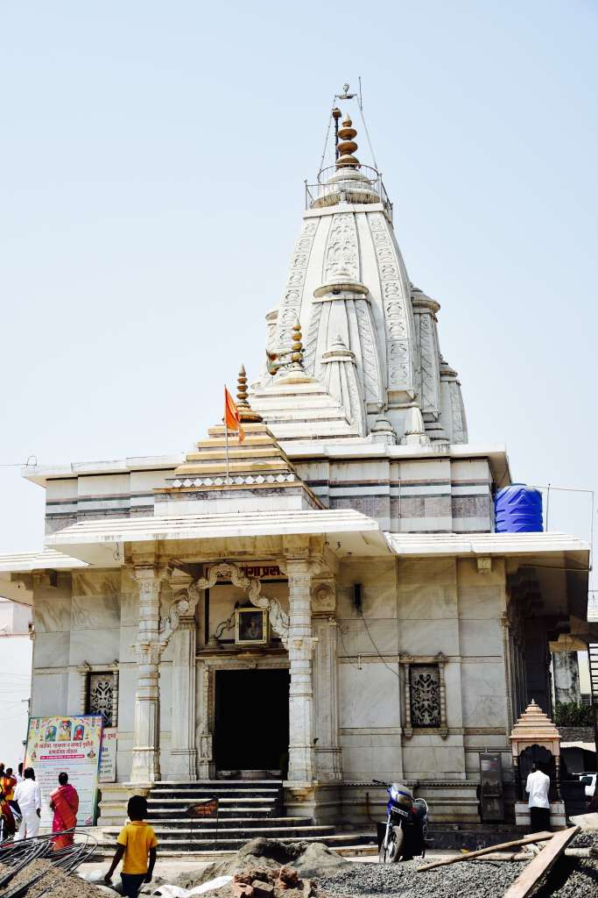

Village Selected:
Nighoj, Ahmednagar

Please turn your phone in landscape mode and refresh this page.
1. Amey Sawale
2. Ayush Satpute
3. Chaitanya Shelar
4. Hitesh Bhusara
5. Yash Kumar
To Share interesting facts and information about our village, its culture, tradition, popular monuments, good environmental practices, interviews with the people, etc.,
Nighoj, Ahmednagar
The village Nighoj is located in the Parner taluka, which lies in the eastern part of Ahmednagar district. The village is famous for its naturally created potholes on the riverbed of the Kukadi River.
These potholes make this village special. Scientists from all over the world are fascinated by naturally created potholes. Several nature enthusiasts. Travel photographers, etc… come every year to experience this wonderful work of nature. The beautiful looking potholes are carved by the flowing circular currents in the river. The small pebbles-sediment, trapped in the water, rub against the riverbed to create a depression. The formation of the potholes is a continuous process that has come over a long time. The place is also known by its name “ The Little Grand Canyon ".
Nighoj village comes alive during Janmashtami when lakhs of devotees throng to witness a miracle.In the core of the village, is an architectural beauty - barav (step well) known for its magnificent Hemadpanthi structure. Locals believe that on Janamashthami, the day that Lord Krishna was born, an earthern pot filled with water emerges from the step well, at midnight. This is displayed in the temple of Malganga for 3 days. On the 3rd day, the pot is taken near the well from where it disappears. Locals claim that it is the miracle of Malganga Devi. The faith of villagers in this goddess is phenomenal.
In the peaceful village of Nighoj men are clad in white dhotis and Kurtas, while women are attired in colorful Nauvari sarees and the typical Maharashtrian Nathni.

Since it is located in the region of Khandesh and northern Maharashtra. The cuisine includes spicy and mouth watering food like Misal, Pithla bhakri, Spicy amti, Kadi, Dal rice,etc…. During the festival season sweet dishes such as Puran-poli, Modak, Gulab-jamun, etc….
The aggregate population of the village is 10,385. Which roughly consists of male population of about 52% and female population of about 48%. The total literacy rate is 68%.
| Census Parameter | Census Data |
|---|---|
| Total Population | 10385 |
| Total No of Houses | 2109 |
| Female Population % | 47.9 % ( 4975) |
| Total Literacy rate % | 67.9 % ( 7048) |
| Female Literacy rate | 29.2 % ( 3035) |
| Scheduled Tribes Population % | 4.0 % ( 415) |
| Scheduled Caste Population % | 8.9 % ( 923) |
| Working Population % | 50.5 % |
| Child(0 -6) Population by 2011 | 1178 |
| Girl Child(0 -6) Population % by 2011 | 44.5 % ( 524) |
People are mainly dependent on farming. Farmers cultivate sugarcane, cotton, soybean, millet, etc in their farms. Many people are now operating small businesses in the Nighoj market along with their profession. Schooling facilities are also good in Nighoj.

The main attraction among this temple is the Malganga temple due to its mysterious event which occurs on the day of Janmashtami.
By Road: Shirur is the nearest town to Nighoj. Road connectivity is there from Shirur to Nighoj.
By Train: Sainagar Shirdi RailWay Station is the very nearby railway station to Nighoj. However Manmad Jn RailWay Station is a major railway station 57 KM near to Nighoj.
By Airway: The nearest airports are Gandhinagar Airport- 80 KM Chikkalthana Airport- 109 KM
Villager: I am fine, child.
Villager: Yea, I am free right now.
Villager: Yeah, as every village has its temple there are 6 temples in total in here. Their names are Malaganga Temple, Kapileshwar Temple, Waghajai Mata Temple, Shambhu Temple, Vardvinayak Temple, Savta mali Temple, etc...
Villager: Yeah, the Malganga temple is known due to its mysterious event which occurs on the day of Janmashtami.
Villager: In the village, there is a Hemadpanthi structure called 'barav '. On Janmashthami earthen pot filled with water emerges from step well at midnight. This is exhibited in the temple of Malganga for 3 days. On the third day, the people of the village take that pot near the well from where it disappears. This is a mystery till now, lots of people say this is the miracle of Malganga Devi.
Villager: There are potholes that make this village special. Tourists come every year to experience this wonderful work of nature. These natural-looking potholes are created by the flowing of rivers and rainwater. Some say that this is a repetitive process that goes on over time, and it will still carry on.
Villager: Yes, all the children in the village go to school from 9 am - 5 pm, Monday through Saturday. Children here study till class 8 because village schools like some Z.P. Schools provide education only till 8th class. For further studies students go to cities.
Villager: We use dung from the animals and firewood for cooking, some of us even use LPG gas, but still it hasn't reached to every family of this village. Every year, we go up the mountain and gather firewood from the forest. We might have to go more than one time a year.
Villager: If there is any problem in the village, there is a panchayat administration to handle it. The panchayat is consulted in need of help in certain problems. If both the people are not happy with the solution or service of the panchayat, then they contact the nearby police station.
Villager: Here most men wear white dhotis and Kurtas, while women are covered in colorful Nauvari sarees and the typical Maharashtrian Nathni. Though you can also find some people dressed in other ways these days.
Villager: Mostly from the fields. Sometimes we get some vegetables from the near town market. Right now, we grow carrots, sweet potatoes, tomatoes, green peas, onion, potatoes, mustard seed, cabbage, cauliflower, ginger, different leafy vegetables, sugar cane. Soon we will begin to plant and harvest our summer foods: watermelon, cucumber, mangos, pumpkin, and rice when the rainy season heralds. Normally, we sell our surplus of these things in the town market itself.
Beside the western ghats of Maharashtra, Nighoj village paves its place in the delightful district of Ahmednagar. The people of the village are always happy and humble to each other. They show great excitement for festivals, especially for the festival of Janmashtami.
The best season to visit the village is the end of rainy and summer. As there is a lot of greenery also we can see the waterfall in the rainy season. And in summer one can see the beauty of engraved potholes.
The thing which makes this village unique is the Kukadi river which accompanies it with naturally formed attractive potholes. One can enjoy a lot of things and experience the miracle of mother nature in Nighoj village.
(Hover/Click Over the left image and see the zoomed part on the right side.)

Amey Sawale
Chaitanya Shelar
Hitesh
Bhusara
 Video Editing
Video EditingAyush Satpute
Yash Kumar